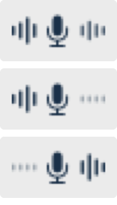

What you get
Transcription tools and AI assistants read one microphone. That is fine when you are the only person talking — and useless the moment the conversation has another side to it, because the voice coming out of your speakers is not part of your microphone input.
Open Mic adds an input device called Open Mic. Select it anywhere a microphone can be selected, and that app hears both halves of the conversation.

- Both arriving. The bars move on each side.
- Only your microphone. The right side stays flat — system audio is not reaching the mix.
- Only system audio. The left side stays flat.
The meter is there because "it isn't working" is usually one half failing, not both. Left is your microphone, right is your Mac. You can see which one stopped without opening anything.
Two steps
- Turn Open Mic on from the menu bar.
- Choose Open Mic as the microphone in the app you are using.
That is the whole setup. Open Mic never changes your output device, so your speakers, headphones and volume keys keep behaving exactly as they did.
Why not a loopback driver?
BlackHole and similar tools are loopback devices: audio sent to them comes back as an input. They do not capture system audio on their own, and they do not mix in your microphone. To approximate this you would build a Multi-Output Device so you can still hear anything, point your system output at it, then build an Aggregate Device combining it with your microphone.
And it still would not work. An Aggregate Device lays its sources out on separate channels — microphone on 1–2, loopback on 3–4 — it does not sum them. Browsers and most apps read only the first two channels, so they receive your microphone and nothing else.
| Open Mic | Loopback driver + Aggregate Device | |
|---|---|---|
| Mixed audio on channels 1–2 | Yes | No — separate channels |
| Works with browsers and generic apps | Yes | Microphone only |
| Setup | Install, switch on | Multi-Output + Aggregate, by hand |
| Changes your output device | No | Yes, required |
| Survives changing headphones | Yes | Usually needs rebuilding |
Where those tools win: they are mature, open source, work on older macOS, and need no screen-recording permission. Open Mic asks for more in exchange for doing the one thing automatically.
Permissions
macOS will ask for two things the first time you switch it on.
- Microphone — to capture your voice.
- Screen Recording — to capture what your Mac is playing.
Nothing is uploaded. Open Mic has no network code at all — audio passes through memory and is never written to disk. The release includes a document for security reviewers with commands to verify that yourself.
Install and uninstall
Download the .pkg and open it. It is signed with a Developer ID
and notarized by Apple, so it opens without warnings.
Installing restarts Core Audio, which mutes your Mac for a second or two — don't install during a call.
Removing it
sudo "/Library/Application Support/OpenMic/uninstall.sh"That removes everything and verifies nothing was left behind.
Feedback
Bug reports and requests go to GitHub Issues. The app has a Send Feedback item that opens a new issue with the diagnostics already filled in — which devices you are using, whether the driver is installed, how the capture is behaving. It opens the form in your browser so you can read and edit it; nothing is sent until you press the button.